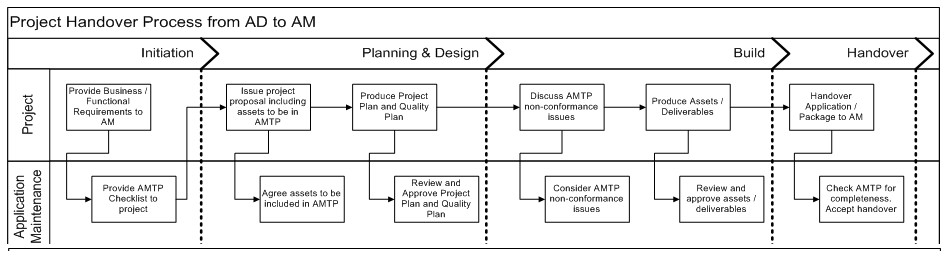

| Artifact: Application Maintenance Turnover Definition (APP 403) |
 |
|
The purpose of the Application Maintenance Turnover Definition is to:
Provide direction to the handover process in the context of the following scenarios:
|
| Parent Deliverables | ||
|---|---|---|
| Roles | Responsible: | Modified By: |
| Tasks | Input To: | Output From: |
| Main Description | The Application Maintenance Turnover Definition intends to assist the application development team and maintenance team in understanding and performing a structured turnover. The process of turning over a new body of application functionality and processes to ongoing maintenance and support organizations is accomplished by identifying the appropriate assets to be turned over based on certain acceptance criteria. A well documented turnover definition will ensure that the maintenance team understands the application system in its entirety for a smooth implementation and maintenance of the application in the production environment. This is the plan for the transition of the application to the accepting maintenance/support team. |
|---|---|
| Brief Outline | The Application Maintenance Turnover Definition contains the following components:
|
The diagram below illustrates the turnover of an application from the AD team to the AME team. It illustrates the involvement of the AME team in the creation of checklists and approval of assets (or deliverables) created during the turnover lifecycle till the transfer of responsibility to it. This process should not be considered to be a complete definition of all project management processes.

|
| Impact of not having | Lack of an Application Maintenance Turnover Definition leads to the following:
|
|---|---|
| Reasons for not needing | The Application Maintenance Turnover Definition work product is not needed if the application development and application maintenance teams are both part of the same organization and the established policies and processes of turnover to the maintenance team exist as part of the application development team’s processes and guidelines. In such cases, the application turnover process is subject to the guidelines and processes outlined by the application development (AD) team at the start of the engagement. |
| Representation Options | The Application Maintenance Turnover Definition work product is documented in a textual form, illustrated by diagrams where necessary and strengthened by references to relevant work products of the existing application system. |
| Guidelines | |
|---|---|
| Estimation Considerations |
| © Copyright IBM Corp. 1987, 2012 All Rights Reserved Property of IBM These materials are intended only for use as part of an IBM engagement |